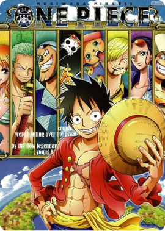

One Piece - Episode 1018

-
Type:
Tv
-
Studios:
Toei Animation
-
Duration:
24 Min.
-
Genres:
Action, Adventure, Fantasy
Sypnosis:
Gol D. Roger was known as the "Pirate King," the strongest and most infamous being to have sailed the Grand Line. The capture and execution of Roger by the World Government brought a change throughout the world. His last words before his death revealed the existence of the greatest treasure in the world, One Piece. It was this revelation that brought about the Grand Age of Pirates, men who dreamed of finding One Piece—which promises an unlimited amount of riches and fame—and quite possibly the pinnacle of glory and the title of the Pirate King.